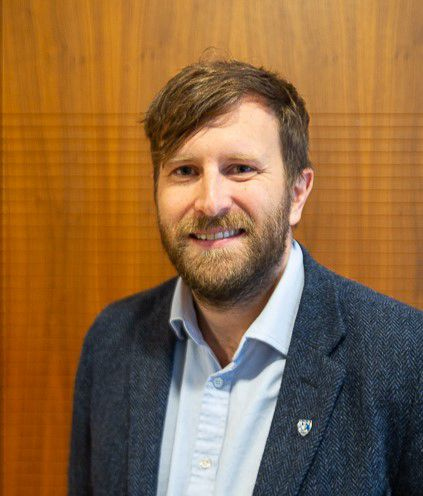

Strategy · Technology · GB & NZ electricity markets
Putting humans at the heart of the energy transition.
Independent advisory on GB and New Zealand electricity — clean energy technology, market strategy and business model design, from national grid services to remote island microgrids.

Energy strategist with 15+ years' experience shaping national decarbonisation pathways, infrastructure investment, and power system strategy across the globe. Trusted advisor to industry leaders, regulators and policymakers — with a track record of influencing policy and delivering over $200m in energy investments across 20+ countries.
My career spans SolarCentury (Energy UK Rising Star award), helping craft the MCS Solar/Battery Self-Consumption Standard used in every UK solar quote, leading Pacific Islands microgrid programmes for Infratec, building a 500MW+ battery portfolio across continents, and managing the replatforming of a 15,000-battery virtual power plant, working on grid operabilty for new energy at system operator level.
I am a Professor in Practice at Durham University Energy Institute, a Fellow of the Energy Institute (Eminence Route), and a Chartered Engineer (IET). I've advised UK and New Zealand Ministers and Parliamentarians, appeared on the BBC, and authored Decarbonising Electricity: Made Simple, published by Routledge.
Whether you're developing a utility-scale battery project, designing an island microgrid, crafting a net zero strategy, or seeking independent technical review — Future Zero brings first-hand delivery experience, not just theory.
Corporate energy strategy, net zero roadmaps, GB and NZ market and regulatory strategy, board-level advisory on the energy transition.
Battery storage, solar, microgrids and virtual power plants — from concept through feasibility to financial close and delivery.
Independent technical due diligence, feasibility studies, peer review and expert witness services for low-carbon projects.
Energy data analysis, consumer research, academic collaboration and policy submissions on electricity decarbonisation.
Structuring and advising on EaaS models — helping organisations procure clean energy outcomes rather than infrastructure, from offtake design to financing.
Keynotes, workshops, university lectures and media appearances on the energy transition, grid modernisation and storage.
Selected career highlights — from New Zealand's first utility-scale battery to consumer standards protecting half a million UK homes.
From using domestic batteries to provide frequency reserve, to designing island microgrids that run on 100% renewables across the Pacific, to developing operability strategy — a career built on making clean energy systems actually work at scale.
New Zealand's first utility-scale battery at 35MW/35MWh. Led development from concept through financial close — commercial modelling, engineering design, OEM selection, procurement and risk assessment.
Led replatforming of 15,000 residential batteries onto machine learning, enabling 99% of customers to reach within $1/month of optimal energy bill.
Lead bid manager on $50m+ pipeline of microgrid projects with 80% bid success rate — including 7 islands in Tonga, 4 sites in the Solomon Islands, and major projects in Tuvalu, Nauru, Palau, Vanuatu, Cook Islands, Micronesia and Kiribati.
A standard developed with Loughborough University and MCS, now applied to every solar and battery quote in the UK, protecting 500,000+ households from misselling since 2019.
Delivered some of the UK's first residential and commercial battery-solar products. 50% of IKEA home solar sales, and the UK's first fully decarbonised retail site in 2018.
Senior adviser since founding. Commercial models for high-power microgrids across East Africa, supporting multi-million-dollar investments in decentralised systems that fund water and farming infrastructure for local communities.
Two independent public platforms built to make electricity data accessible — tracking real-time generation, carbon intensity, and the pace of the clean energy transition.
Founded in 2014, MyGridGB is an independent public resource tracking real-time electricity generation and carbon intensity across the GB grid. Used by researchers, journalists, policymakers and energy professionals to understand how and when Britain generates its power.
The New Zealand equivalent of MyGridGB — live electricity generation data for the NZ grid, including hydro, geothermal, wind, solar and thermal sources. Built to support New Zealand's goal of 100% renewable electricity and give everyone visibility into how the grid is performing today and under future scenarios.
Alongside consulting, Andrew is an active contributor to public understanding of the energy transition.
A practical roadmap for transitioning a national grid to low-carbon energy. Published by Routledge, sold in 15 countries.
Buy on Amazon →BBC appearances, evidence to UK Government on the Clean Power Plan, and keynotes in the UK, New Zealand and Indonesia.
Enquire about speaking →Professor in Practice at Durham University Energy Institute, sitting on the Advisory Board alongside leading figures in UK energy.
Durham Energy Institute →Working on a decarbonisation challenge? Whether it's a battery or microgrid project, a net zero strategy, a research collaboration, or a speaking engagement — every engagement starts with a free, no-obligation conversation.
Drop me an email and I'll get back to you promptly.
Email me →